Peças Fritzing — hw-laboratorio
Fundo claro como a tela do Fritzing; só o PCB vai no escuro, porque a serigrafia é
branca. As ampliações estão anotadas: no tamanho real cada placa tem alguns milímetros.
Modulo Buzzer Ativo P15 (GBK) — buzzer-ativo, conectores GND · SINAL
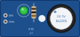
breadboard 1.260 × 0.591 pol · 4×
schematic 1.100 × 1.000 pol · 2.5×
pcb 1.260 × 0.591 pol · 2.5×
icon 0.320 × 0.320 pol · 4×
ESP32-S3 N16R8 (ESP32-S3-WROOM-1, USB-C dupla) — esp32-s3-n16r8, conectores GND · TX · RX · 1 · 2 · 42 · 41 · 40 · 39 · 38 · 37 · 36 · 35 · 0 · 45 · 48 · 47 · 21 · 20 · 19 · GND2 · GND3 · 3V3 · 3V32 · RST · 4 · 5 · 6 · 7 · 15 · 16 · 17 · 18 · 8 · 3 · 46 · 9 · 10 · 11 · 12 · 13 · 14 · 5VIN · GND4
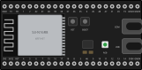
breadboard 2.244 × 1.102 pol · 4×
schematic 1.300 × 2.700 pol · 2.5×
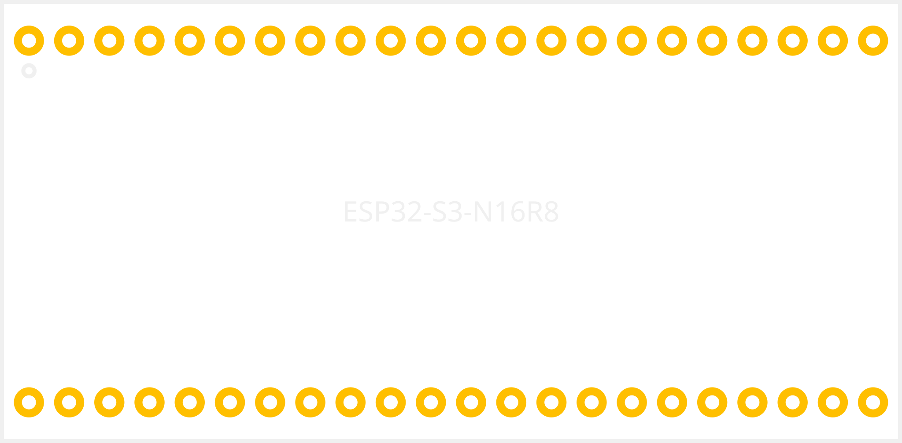
pcb 2.244 × 1.102 pol · 2.5×
icon 0.320 × 0.320 pol · 4×
NodeMCU ESP8266 LoLin v3 (ESP-12E) — nodemcu-lolin-v3, conectores D0 · D1 · D2 · D3 · D4 · 3V · G · D5 · D6 · D7 · D8 · RX · TX · G2 · 3V2 · A0 · G3 · VU · S3 · S2 · S1 · SC · SO · SK · G4 · 3V3 · EN · RST · G5 · VIN
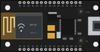
breadboard 2.323 × 1.220 pol · 4×
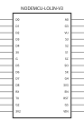
schematic 1.300 × 2.000 pol · 2.5×
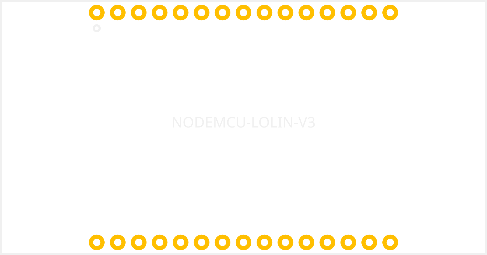
pcb 2.323 × 1.220 pol · 2.5×
icon 0.320 × 0.320 pol · 4×
RF 433 MHz RX (MX-05V) — rf433-rx, conectores VCC · DATA · DATA2 · GND · ANT
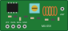
breadboard 1.181 × 0.551 pol · 4×
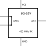
schematic 1.100 × 1.100 pol · 2.5×
pcb 1.181 × 0.551 pol · 2.5×
icon 0.320 × 0.320 pol · 4×
RF 433 MHz TX (FS1000A) — rf433-tx, conectores DATA · VCC · GND · ANT
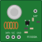
breadboard 0.748 × 0.748 pol · 4×
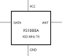
schematic 1.100 × 1.000 pol · 2.5×
pcb 0.748 × 0.748 pol · 2.5×
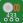
icon 0.320 × 0.320 pol · 4×